03-large-intestine¶
ערוץ המעי הגס - שו יאנג מינג דה צ'אנג¶
Hand Yang Ming Large Intestine Channel (Shou Yang Ming Da Chang Jing)¶
מטרות למידה¶
בסיום שיעור זה, הסטודנט יוכל:
- לתאר את מסלול ערוץ המעי הגס — חיצוני ופנימי
- לאתר את כל 20 הנקודות (LI1-LI20) על הגוף
- לתאר את פעולות כל נקודה ואת התוויותיה
- לבצע דיקור בטוח בכל נקודות הערוץ
- להסביר את הקשר פנים-חוץ בין מעי גס (LI) לריאות (LU)
- לזהות פתולוגיות נפוצות של ערוץ המעי הגס
1. סקירת הערוץ¶
1.1 מידע כללי¶
| מאפיין | פרטים |
|---|---|
| שם סיני | (Shou Yang Ming Da Chang Jing) |
| סוג | יאנג — יאנג מינג (Yang Ming) |
| גפה | יד (Hand) |
| איבר | מעי גס (Da Chang) |
| זוג פנים-חוץ | ריאות (LU) — טאי ין |
| מספר נקודות | 20 (LI1-LI20) |
| שעת שיא | 05:00-07:00 |
| כיוון זרימה | מהאצבע המורה אל הפנים (הצד הנגדי של האף) |
| אלמנט | מתכת (Jin) |
1.2 מסלול הערוץ¶
מסלול חיצוני (Wai Xing)
- מתחיל בפינה הרדיאלית של ציפורן האצבע המורה (LI1)
- עולה לאורך הצד הרדיאלי (צד האגודל) של האצבע המורה
- ממשיך בין עצמות המטקרפל הראשונה והשנייה (LI4)
- עובר דרך ה-"Anatomical Snuffbox" ועולה לאורך הצד האחורי-לטרלי של האמה
- מגיע למרפק (LI11) בצד הלטרלי
- עולה לאורך הצד הלטרלי-קדמי של הזרוע העליונה
- מגיע לכתף (LI15) ולבליטת הכתף
- יורד אל הגומה שמעל לבריח (LI16) ועולה לצוואר
- חוצה את הלחי ונכנס לחניכיים התחתונות ושיניים
- חוצה את השפה העליונה ומסתיים בצד הנגדי של האף (LI20)
מסלול פנימי (Nei Xing)
- מ-LI16, ענף פנימי יורד דרך הסרעפת
- מתחבר לריאות (האיבר המזווג)
- חודר דרך הסרעפת אל המעי הגס
ענף לפנים
- מ-LI16, ענף עולה לצוואר ולחי, נכנס לשיניים התחתונות
- חוצה את הפילטרום (Ren Zhong / DU26) — כאן ערוצי ימין ושמאל מצטלבים
- LI20 של ימין נמצא ליד נחיר שמאל, ולהפך
1.3 תפקודי איבר המעי הגס (Da Chang)¶
- שולט בהעברה ובהוצאה — מקבל פסולת מהמעי הדק ומוציא אותה
- שולט בנוזלים — ספיגת מים מהפסולת
- קשור לריאות — הריאות שולטות בהורדת צ'י, שמשפיעה על תפקוד המעי
- קשור לעור — דרך הריאות (פנים-חוץ), בעיות עור קשורות למעי
- נפתח לאף (דרך הערוץ) — LI20 ליד האף
1.4 פתולוגיות נפוצות של הערוץ¶
- כאב שיניים, כאב חניכיים, נפיחות בפנים
- כאב גרון, דימום מהאף
- עצירות, שלשול
- כאב לאורך מסלול הערוץ: אצבע מורה, יד, אמה, מרפק, כתף
- בעיות עור (אקנה, אקזמה)
- כאב ראש קדמי (Frontal headache)
2. נקודות הערוץ¶
WHO Standard Acupuncture Point Locations (WHO, CC BY-NC-SA 3.0 IGO):
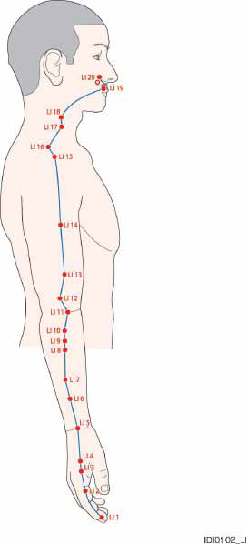
LI1 — שאנג יאנג¶
שם סיני: (Shang Yang) משמעות השם: "יאנג של המתכת" — שאנג = צליל המתכת; יאנג = ערוץ יאנג קטגוריה מיוחדת: נקודת ג'ינג-באר (Jing Xue) — אלמנט מתכת (Jin)
מיקום אנטומי
בצד הרדיאלי (צד האגודל) של האצבע המורה, כ-0.1 צון מפינת בסיס הציפורן.
איך למצוא את הנקודה
- התבוננו באצבע המורה של המטופל
- אתרו את ציפורן האצבע המורה
- הנקודה בפינה של בסיס הציפורן — בצד שפונה לאגודל (צד רדיאלי)
- מדדו כ-0.1 צון (2 מ"מ) מפינת הציפורן, באלכסון
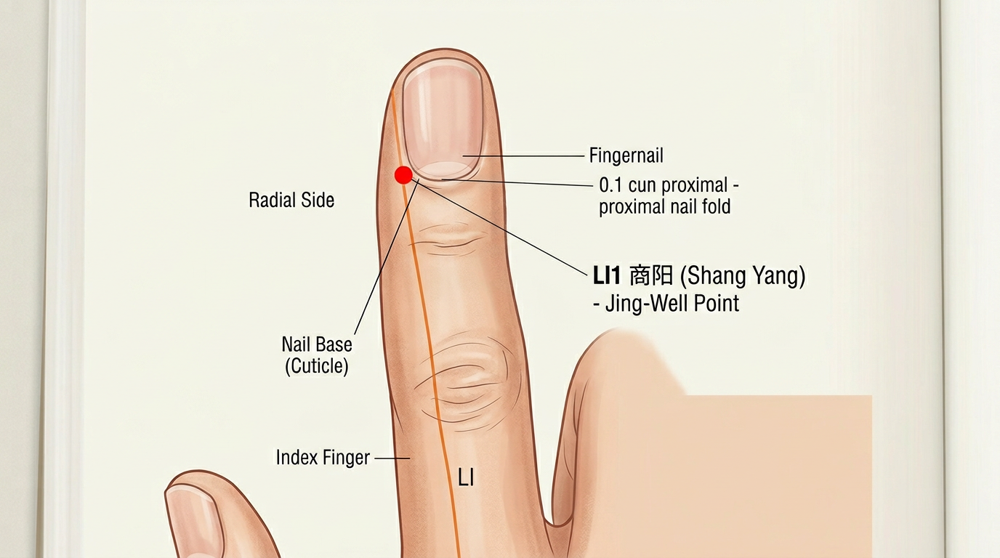
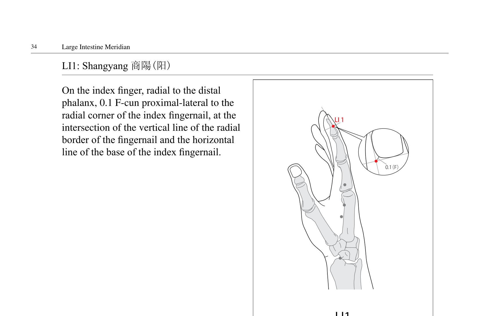
External References: AcuPoints
דיקור
- שיטה: בעיקר הוצאת דם עם מחט משולשת
- עומק: 0.1 צון
- תחושת דה-צ'י: כאב חד מקומי
פעולות והתוויות
- פעולות: מפנה חום; מועיל לגרון ולשיניים; משחרר שטח; מחייה מאבדן הכרה
- התוויות: כאב שיניים, כאב גרון, נפיחות בלחי, חום גבוה, אובדן הכרה, נימול באצבעות
- שילובים נפוצים: LI1 + LU11 (הוצאת דם — חום גבוה, כאב גרון)
LI2 — אר ג'יאן¶
שם סיני: (Er Jian) משמעות השם: "המרווח השני" — הנקודה השנייה בערוץ, במרווח השני של האצבע קטגוריה מיוחדת: נקודת יינג-מעיין (Ying Xue) — אלמנט מים (Shui)
מיקום אנטומי
בצד הרדיאלי של האצבע המורה, דיסטלית למפרק המטקרפו-פלנגיאלי (MCP), בגבול בין העור הבהיר לכהה.
איך למצוא את הנקודה
- בקשו מהמטופל לכופף מעט את האצבע המורה
- אתרו את מפרק הפרק השני (MCP) של האצבע — הבליטה הגדולה בבסיס האצבע
- הנקודה נמצאת דיסטלית (לכיוון קצה האצבע) למפרק, בצד הרדיאלי
- על הגבול בין העור הבהיר (כף) לעור הכהה (גב)
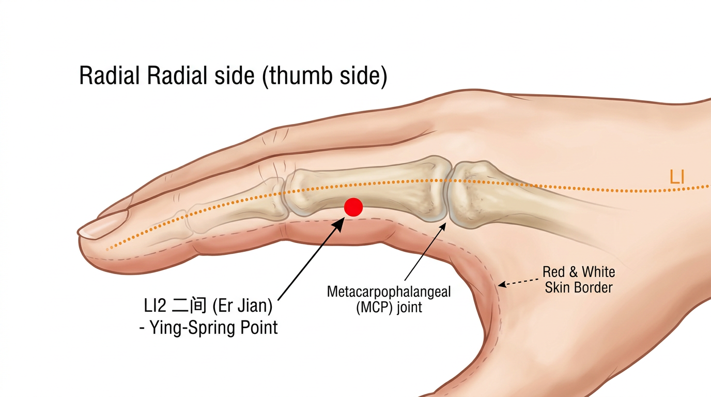
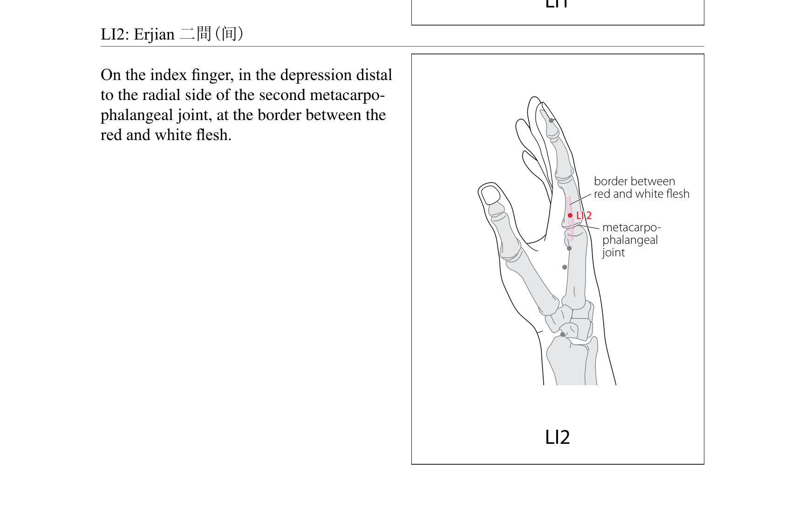
External References: AcuPoints
דיקור
- זווית: ניצבת, 90°
- עומק: 0.2-0.3 צון
- תחושת דה-צ'י: נימול מקומי
פעולות והתוויות
- פעולות: מפנה חום מערוץ יאנג מינג; מועיל לגרון, לאף ולשיניים
- התוויות: כאב שיניים, דימום מהאף, כאב גרון, ראייה מטושטשת
- שילובים נפוצים: LI2 + LI4 (כאב שיניים חריף)
LI3 — סאן ג'יאן¶
שם סיני: (San Jian) משמעות השם: "המרווח השלישי" — הנקודה השלישית בערוץ קטגוריה מיוחדת: נקודת שו-זרם (Shu Xue) — אלמנט עץ (Mu)
מיקום אנטומי
בצד הרדיאלי של האצבע המורה, פרוקסימלית למפרק המטקרפו-פלנגיאלי (MCP), בגומה שמאחורי ראש עצם המטקרפל השנייה.
איך למצוא את הנקודה
- בקשו מהמטופל לקפוץ את האגרוף בעדינות
- אתרו את מפרק ה-MCP של האצבע המורה (הפרק הבולט)
- גששו את הגומה שמאחורי ראש עצם המטקרפל — פרוקסימלית למפרק
- הנקודה בצד הרדיאלי (צד האגודל), על הגבול בין עור בהיר לכהה
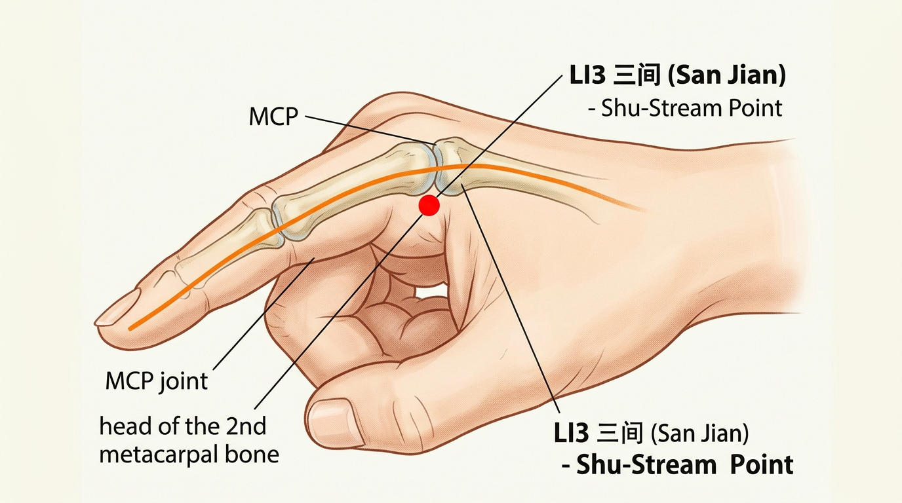
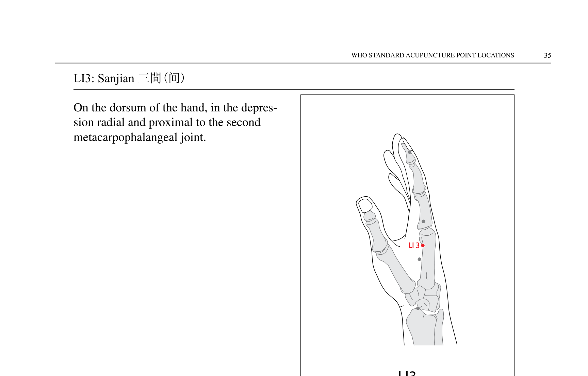
External References: AcuPoints
דיקור
- זווית: ניצבת, 90°
- עומק: 0.3-0.5 צון
- תחושת דה-צ'י: כבדות, נימול מקומי
פעולות והתוויות
- פעולות: מפנה חום; מפיג נפיחות; מועיל לעיניים ולשיניים
- התוויות: כאב שיניים, כאב עיניים, כאב גרון, שלשולות, כאב בגב היד
- שילובים נפוצים: LI3 + LI4 (כאב וגודש ביד)
LI4 — הה גו¶
שם סיני: (He Gu) משמעות השם: "עמק המפגש" — הנקודה בעמק (הגומה) שבין עצמות המטקרפל הראשונה והשנייה קטגוריה מיוחדת: נקודת יואן-מקור (Yuan Xue); אחת מ-4 נקודות הפיקוד
מיקום אנטומי
על גב היד, בין עצמות המטקרפל הראשונה והשנייה, בנקודת האמצע של הצד הרדיאלי של עצם המטקרפל השנייה, בשריר ה-First Dorsal Interosseous.
איך למצוא את הנקודה
- בקשו מהמטופל להרפות את היד
- שיטה 1: הניחו את קפל המפרק הבין-פלנגיאלי (IP) של האגודל על קרום האצבעות (Web) בין אגודל לאצבע מורה של היד השנייה — קצה האגודל נוגע ב-LI4
- שיטה 2: אתרו את אמצע הצד הרדיאלי של עצם המטקרפל השנייה; לחצו לכיוון העצם
- הנקודה נמצאת בבשר השרירי (First Dorsal Interosseous) שבין האגודל לאצבע המורה
- לחצו כלפי עצם המטקרפל השנייה — כאב ברור וחד
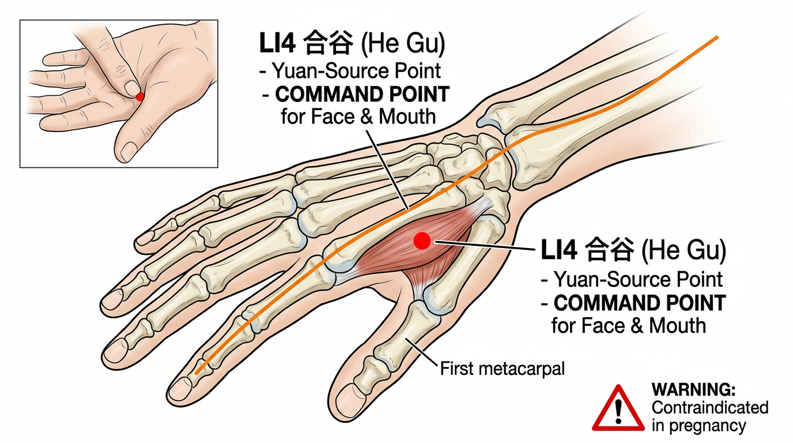
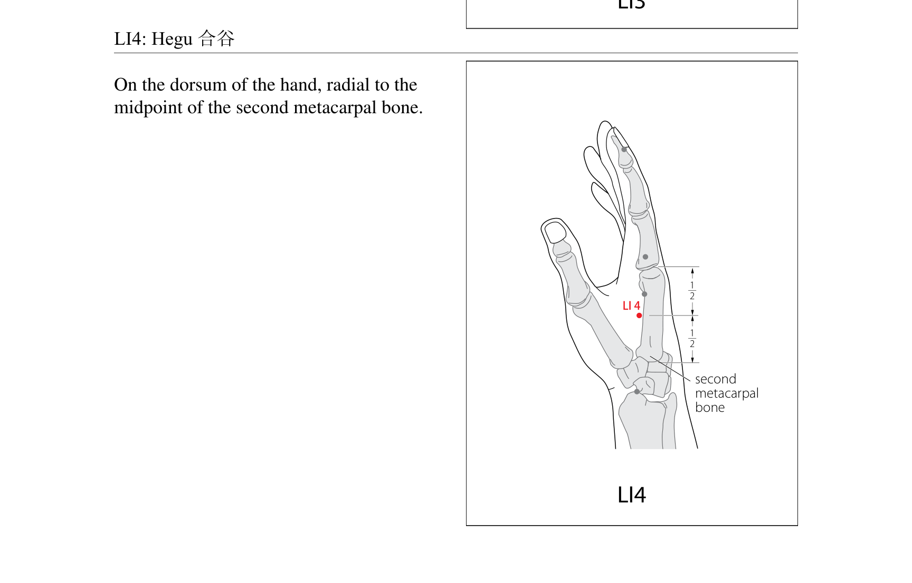
External References: AcuPoints
דיקור
- זווית: ניצבת, 90° (כלפי עצם המטקרפל השנייה)
- עומק: 0.5-1.0 צון
- ⚠️ זהירות: אסור בהריון — נקודה זו מעודדת צירים ועלולה לגרום להפלה
- תחושת דה-צ'י: כבדות, כאב עמוק, נימול שמתפשט לאצבעות או לזרוע
פעולות והתוויות
- פעולות: מפזר רוח ומשחרר שטח; מפנה חום; מרגיע כאב (נקודת שיכוך כאב מספר 1); מווסת צ'י הפנים, האף, העיניים, האוזניים והפה; מווסת הזעה; מחזק ווי צ'י; מווסת צירים
- כנקודת פיקוד: "הפנים והפה — הה גו גוששת"
- התוויות: כאב ראש (כל סוג), כאב שיניים, כאב פנים, שיתוק פנים, הצטננות, חום, הזעה (או חוסר הזעה), כאב גרון, אלרגיה, עצירות, כאב בטן, אי-סדירות מחזור, עיכוב לידה
- שילובים נפוצים: LI4 + LR3 = "ארבע שערות" (Si Guan — מרגיע כאב, מפזר צ'י); LI4 + LU7 (הצטננות); LI4 + ST44 (כאב שיניים, חום בקיבה); LI4 + SP6 (לעידוד צירים — אסור בהריון!)
LI5 — יאנג שי¶
שם סיני: (Yang Xi) משמעות השם: "נחל היאנג" — נקודה בגומה (נחל) בצד היאנג של שורש כף היד קטגוריה מיוחדת: נקודת ג'ינג-נהר (Jing Xue) — אלמנט אש (Huo)
מיקום אנטומי
בגומה (Anatomical Snuffbox) שנוצרת בצד הרדיאלי-אחורי של שורש כף היד, בין גידי ה-Extensor Pollicis Longus ו-Extensor Pollicis Brevis, כאשר האגודל מורחק (Abducted).
איך למצוא את הנקודה
- בקשו מהמטופל להרחיק (Abduct) את האגודל — כאילו עושה "הכל בסדר" (thumbs up)
- בצד האחורי של שורש כף היד, תיווצר גומה ברורה בין שני גידים בולטים
- זו ה-"Anatomical Snuffbox" — תיבת הטבק האנטומית
- הנקודה במרכז הגומה, ברמת קפל שורש כף היד
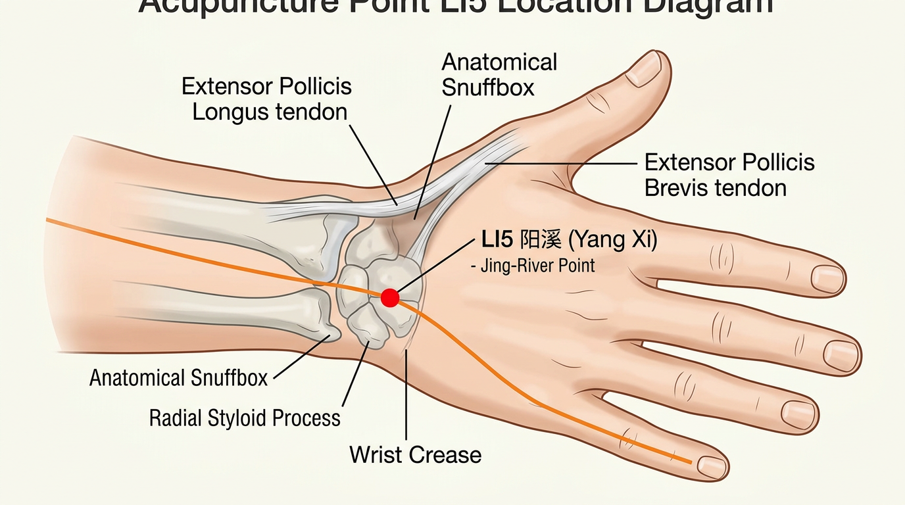
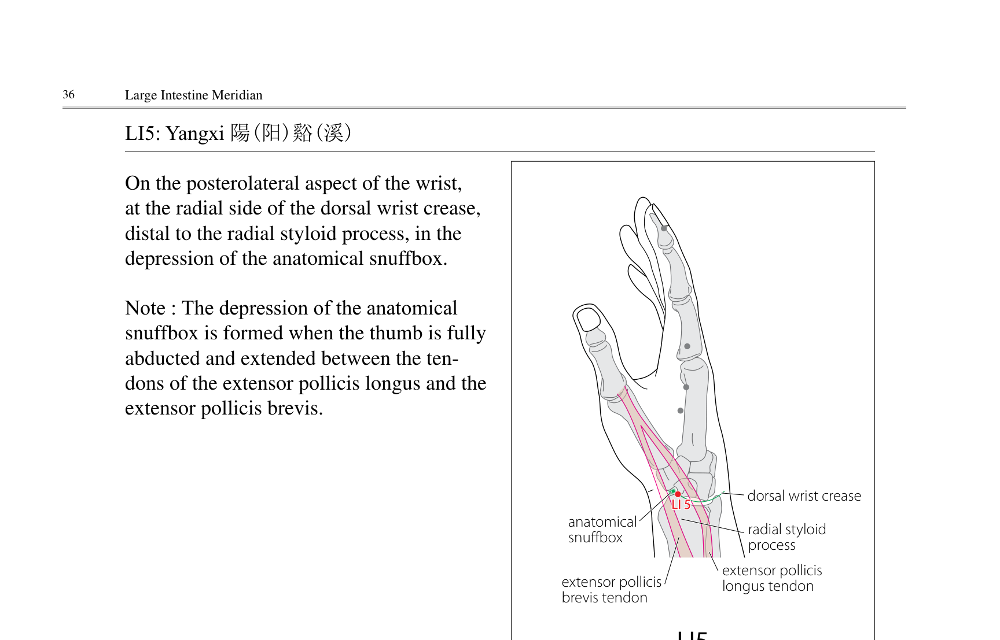
External References: AcuPoints
דיקור
- זווית: ניצבת, 90°
- עומק: 0.3-0.5 צון
- תחושת דה-צ'י: כאב מקומי, נימול
פעולות והתוויות
- פעולות: מפנה חום; מרגיע כאב; מועיל לשורש כף היד
- התוויות: כאב שורש כף היד, כאב ראש, כאב שיניים, כאב עיניים (אדמומיות), חום
- שילובים נפוצים: LI5 + TE4 (כאב שורש כף היד)
LI6 — פיאן לי¶
שם סיני: (Pian Li) משמעות השם: "מעבר צדדי" — ענף שסוטה הצידה מהערוץ הראשי קטגוריה מיוחדת: נקודת לואו מחברת (Luo Xue)
מיקום אנטומי
3 צון מעל LI5, על הקו המחבר בין LI5 ל-LI11, על הצד הרדיאלי-אחורי של האמה.
איך למצוא את הנקודה
- אתרו את LI5 (בגומה בשורש כף היד) ואת LI11 (בקפל המרפק)
- מדדו 3 צון מעל LI5 לאורך הקו המחבר
- הנקודה נמצאת על הצד הרדיאלי (צד האגודל) של האמה
- בין שרירי ה-Extensor Carpi Radialis ו-Abductor Pollicis Longus
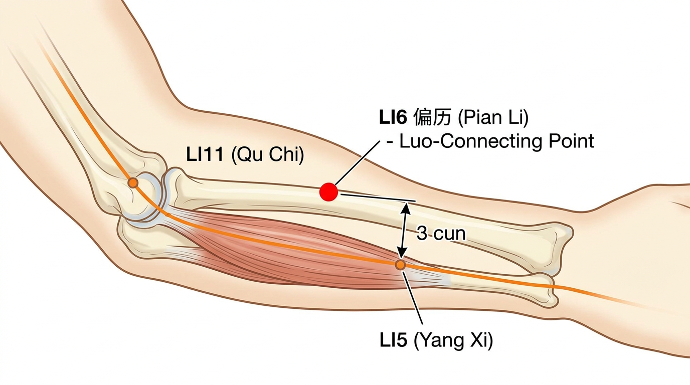
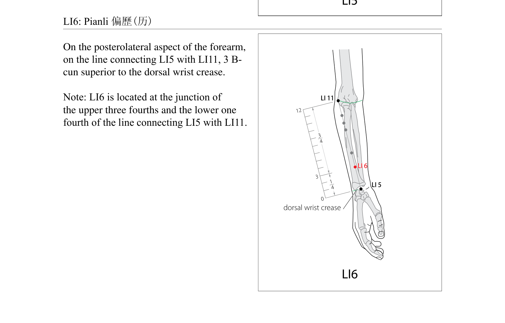
External References: AcuPoints
דיקור
- זווית: ניצבת או אלכסונית, 90-45°
- עומק: 0.3-0.5 צון
- תחושת דה-צ'י: כבדות, נימול מקומי
פעולות והתוויות
- פעולות: מפזר רוח; מפתח מסלול מים; מועיל לאוזן ולעין; מחבר לערוץ הריאות (כנקודת לואו)
- התוויות: בצקות (נפיחות), בעיות שמיעה, טינטון, דימום מהאף, כאב באמה, כאב שיניים
- שילובים נפוצים: LI6 + LU9 (שיטת אורח-מארח — בעיות ריאות ומעי); LI6 + REN9 (בצקות)
LI7 — וון ליו¶
שם סיני: (Wen Liu) משמעות השם: "חום זורם" — נקודה שבה הצ'י נאסף וזורם בחמימות קטגוריה מיוחדת: נקודת שי-צלע (Xi Xue) — נקודת חירום/כאב חריף של הערוץ
מיקום אנטומי
5 צון מעל LI5, על הקו המחבר בין LI5 ל-LI11, על הצד הרדיאלי של האמה.
איך למצוא את הנקודה
- אתרו את LI5 ואת LI11
- מדדו 5 צון מעל LI5 (או 7 צון מתחת ל-LI11)
- הנקודה על הצד הרדיאלי של האמה, על שריר ה-Extensor Carpi Radialis
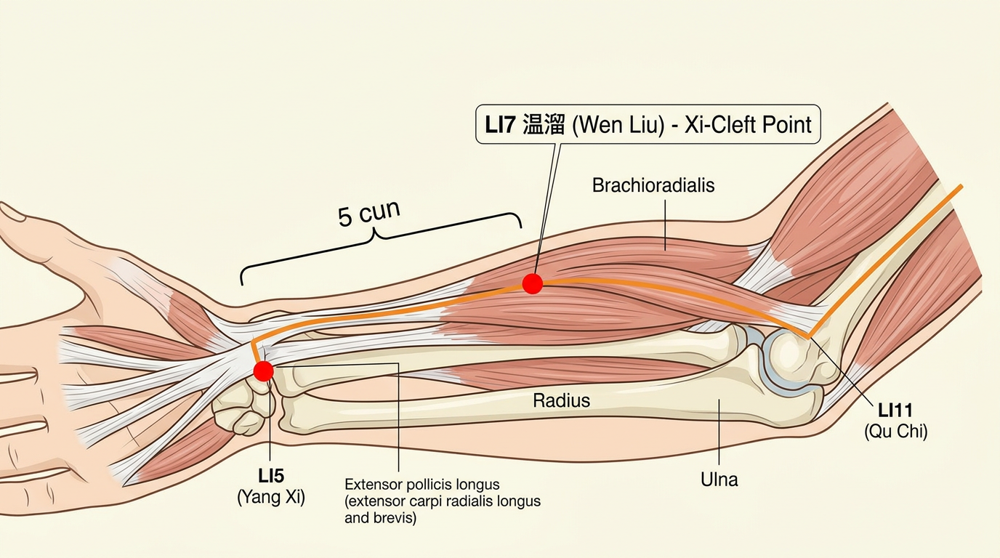
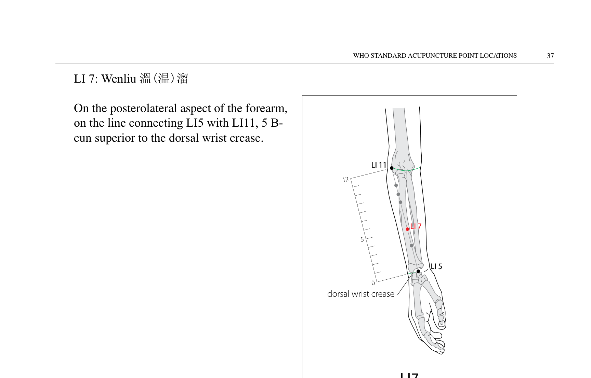
External References: AcuPoints
דיקור
- זווית: ניצבת, 90°
- עומק: 0.5-1.0 צון
- תחושת דה-צ'י: כבדות, כאב עמוק מקומי
פעולות והתוויות
- פעולות: מפנה חום; מפיג נפיחות; מועיל לראש ולפנים; מרגיע כאב חריף (כנקודת שי)
- התוויות: כאב ראש, כאב פנים, נפיחות בפנים, כאב גרון, כאב כתף וזרוע, מורסות בפה
- שילובים נפוצים: LI7 + LI4 + ST44 (כאב שיניים חריף); LI7 + ST6 (נפיחות בלחי)
LI8 — שיה ליאן¶
שם סיני: (Xia Lian) משמעות השם: "צד תחתון" — הנקודה התחתונה מבין שתי נקודות "ליאן" באמה
מיקום אנטומי
4 צון מתחת ל-LI11, על הקו המחבר בין LI5 ל-LI11.
איך למצוא את הנקודה
- אתרו את LI11 (בקפל המרפק)
- מדדו 4 צון ישירות מטה לכיוון שורש כף היד
- הנקודה על שריר ה-Extensor Carpi Radialis
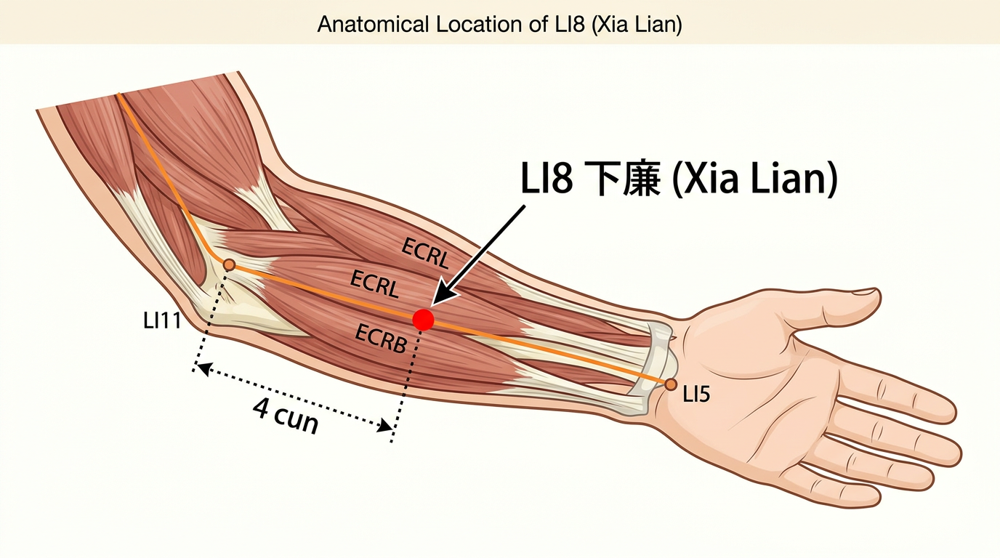

External References: AcuPoints
דיקור
- זווית: ניצבת, 90°
- עומק: 0.5-1.0 צון
- תחושת דה-צ'י: כבדות מקומית
פעולות והתוויות
- פעולות: מווסת צ'י של קיבה ומעיים; מרגיע כאב באמה
- התוויות: כאב בטן, כאב באמה ובמרפק, כאב ראש, סחרחורת
- שילובים נפוצים: LI8 + ST36 (כאבי בטן)
LI9 — שאנג ליאן¶
שם סיני: (Shang Lian) משמעות השם: "צד עליון" — הנקודה העליונה מבין שתי נקודות "ליאן"
מיקום אנטומי
3 צון מתחת ל-LI11, על הקו המחבר בין LI5 ל-LI11.
איך למצוא את הנקודה
- אתרו את LI11
- מדדו 3 צון ישירות מטה
- הנקודה 1 צון מעל LI8
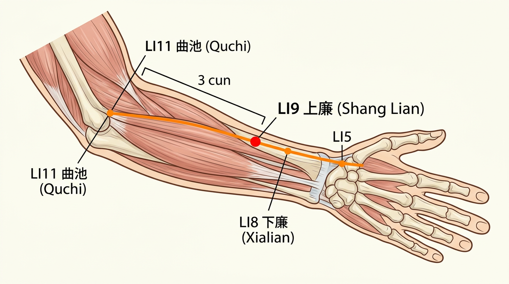
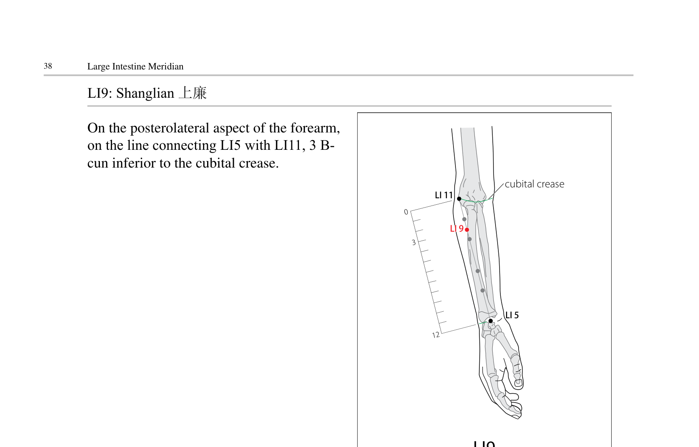
External References: AcuPoints
דיקור
- זווית: ניצבת, 90°
- עומק: 0.5-1.0 צון
- תחושת דה-צ'י: כבדות, נימול
פעולות והתוויות
- פעולות: מווסת מעיים; מרגיע כאב בזרוע
- התוויות: כאב בכתף וזרוע, נימול בזרוע, כאב בטן, בורבוריגמוס (קולות מעיים)
- שילובים נפוצים: LI9 + LI11 (כאב מרפק וזרוע)
LI10 — שו סאן לי¶
שם סיני: (Shou San Li) משמעות השם: "שלושה לי של היד" — 3 לי (=2 צון) מתחת למרפק; מקבילת היד של ST36 קטגוריה מיוחדת: נקודה חשובה לכאב מרפק ולזרוע
מיקום אנטומי
2 צון מתחת ל-LI11, על הקו המחבר בין LI5 ל-LI11, על שריר ה-Extensor Carpi Radialis Longus.
איך למצוא את הנקודה
- אתרו את LI11 (בקפל המרפק, צד לטרלי)
- מדדו 2 צון ישירות מטה לכיוון שורש כף היד
- הנקודה על הגוש השרירי הבולט בצד החיצוני של האמה
- לחצו — רגישות ברורה
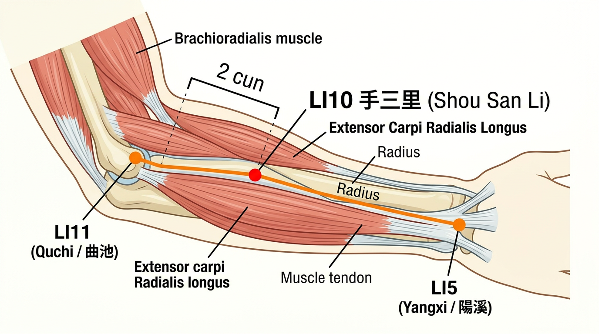
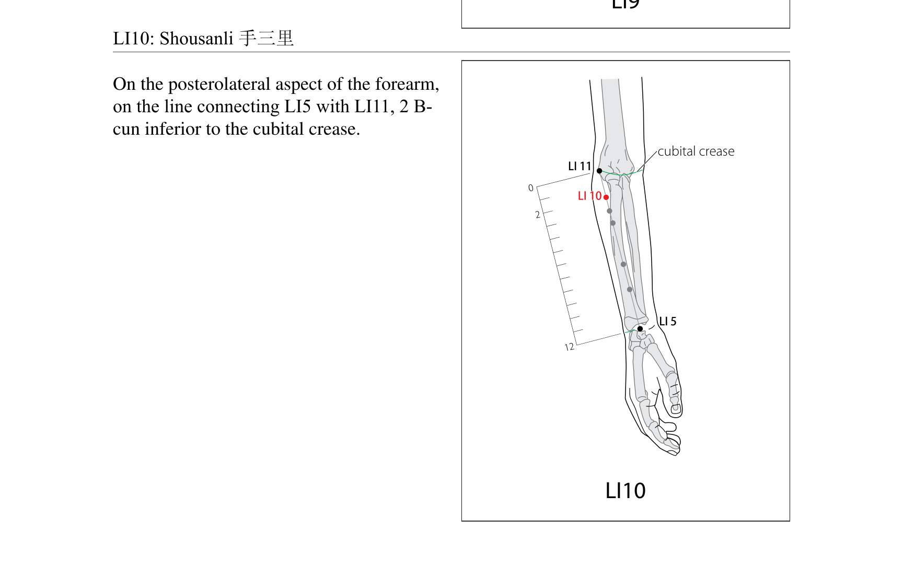
External References: AcuPoints
דיקור
- זווית: ניצבת, 90°
- עומק: 0.8-1.2 צון
- תחושת דה-צ'י: כבדות עמוקה, נימול שמתפשט למרפק או ליד
פעולות והתוויות
- פעולות: מווסת צ'י של קיבה ומעיים; מרגיע כאב בזרוע; מחזק את הזרוע; מפזר רוח-רטיבות
- התוויות: כאב מרפק ("מרפק טניס"), כאב וחולשה בזרוע, שיתוק ידיים, כאב בטן, שלשול, כאב שיניים
- שילובים נפוצים: LI10 + LI11 + LI4 (כאב מרפק וזרוע); LI10 + ST36 (חיזוק צ'י כללי)
LI11 — צ'יו צ'י¶
שם סיני: (Qu Chi) משמעות השם: "בריכה מעוקלת" — כשהמרפק מכופף, נוצרת גומה (בריכה) בקצה הקפל קטגוריה מיוחדת: נקודת הה-ים (He Xue) — אלמנט אדמה (Tu); נקודה מהחשובות באקופונקטורה
מיקום אנטומי
כאשר המרפק מכופף ב-90°, הנקודה נמצאת בקצה הלטרלי של קפל המרפק, באמצע הקו בין ה-Lateral Epicondyle של ה-Humerus לבין LU5.
איך למצוא את הנקודה
- בקשו מהמטופל לכופף את המרפק ב-90°
- אתרו את קפל המרפק
- הנקודה בקצה הלטרלי (חיצוני) של הקפל
- גששו את הגומה שנוצרת בין ה-Lateral Epicondyle לבין גיד ה-Biceps
- לחצו בגומה — רגישות ברורה
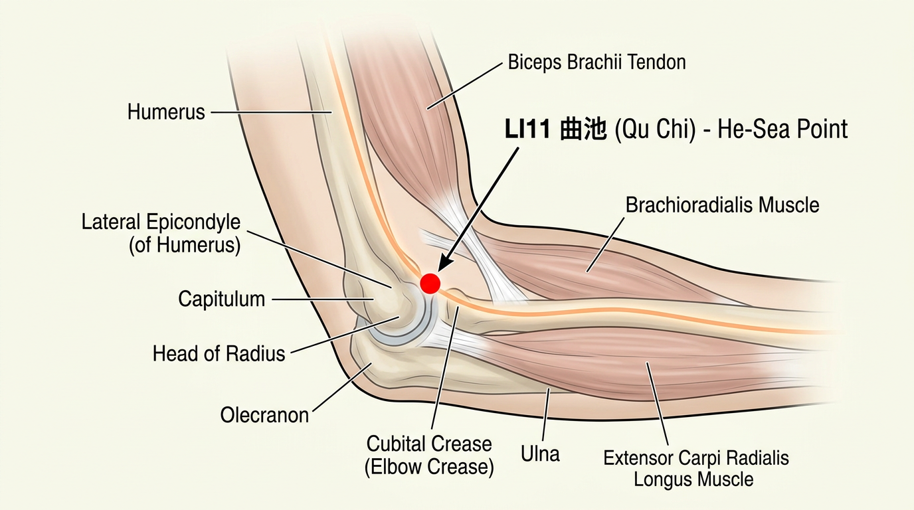
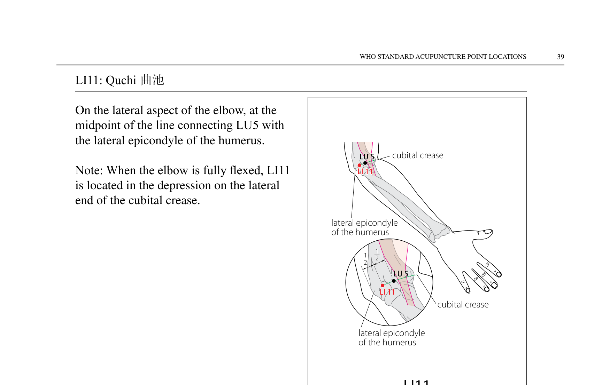
External References: AcuPoints
דיקור
- זווית: ניצבת, 90° (כשהמרפק מכופף)
- עומק: 1.0-1.5 צון
- תחושת דה-צ'י: כבדות עמוקה, נימול שמתפשט לאמה או לכתף
פעולות והתוויות
- פעולות: מפנה חום (נקודת פינוי חום מספר 1 לערוץ יאנג מינג); מקרר דם; מפזר רוח; מפיג רטיבות; מווסת צ'י ודם; מועיל למפרקים; מחזק ווי צ'י
- התוויות: חום, מחלות חום (זיהומיות), יתר לחץ דם, בעיות עור (אקזמה, אקנה, חרפשת/אורטיקריה), כאב מרפק, כאב כתף, שיתוק גפה עליונה, אלרגיות, עצירות, כאב שיניים, כאב עיניים
- שילובים נפוצים: LI11 + LI4 + ST36 (חיזוק חיסוני, פינוי חום); LI11 + SP10 + SP6 (בעיות עור); LI11 + GV14 (חום גבוה); LI11 + ST37 (עצירות); LI11 + GB20 + LR3 (יתר לחץ דם)
LI12 — ז'או ליאו¶
שם סיני: (Zhou Liao) משמעות השם: "שקע המרפק" — ז'או = מרפק; ליאו = שקע עצם
מיקום אנטומי
כאשר המרפק מכופף, 1 צון מעל ולטרלית ל-LI11, על הגבול הלטרלי של ה-Humerus, קדמית ל-Lateral Epicondyle.
איך למצוא את הנקודה
- כופפו את המרפק
- אתרו את LI11
- מדדו 1 צון מעלה ולטרלית, על שפת עצם ה-Humerus
- הנקודה על הגבול של ה-Lateral Supracondylar Ridge
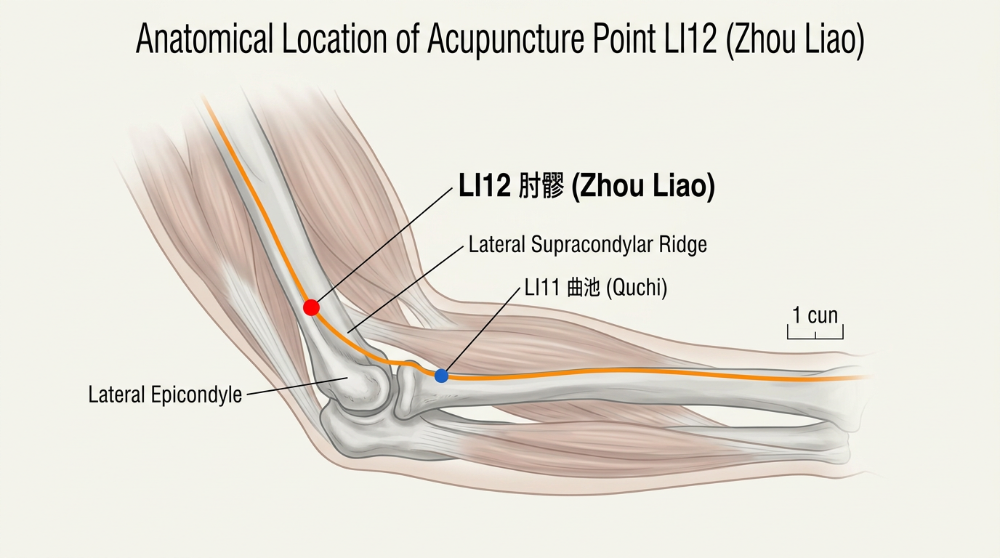
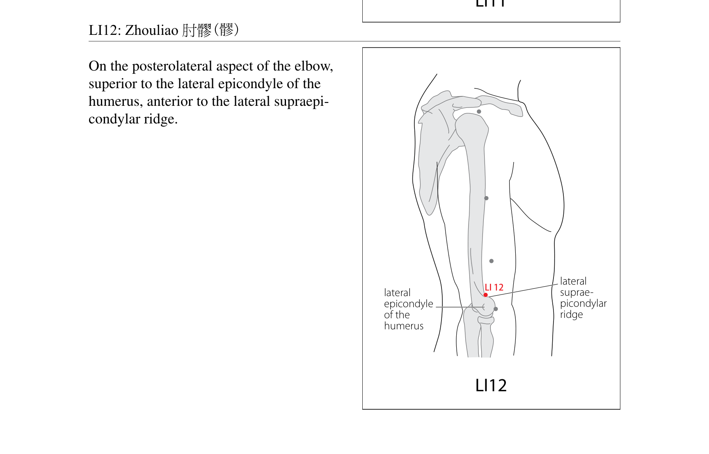
External References: AcuPoints
דיקור
- זווית: ניצבת, 90°
- עומק: 0.5-1.0 צון
- תחושת דה-צ'י: כבדות מקומית
פעולות והתוויות
- פעולות: מרפה גידים; מרגיע כאב מרפק
- התוויות: כאב מרפק, נוקשות מרפק, נימול וכאב בזרוע
- שילובים נפוצים: LI12 + LI11 + LI10 (כאב מרפק מורכב)
LI13 — שו וו לי¶
שם סיני: (Shou Wu Li) משמעות השם: "חמישה לי של היד" — 5 לי מעל המרפק
מיקום אנטומי
3 צון מעל LI11, על הקו המחבר בין LI11 ל-LI15, על הצד הלטרלי של הזרוע העליונה.
איך למצוא את הנקודה
- אתרו את LI11
- מדדו 3 צון מעלה לכיוון הכתף
- הנקודה על הצד הלטרלי-קדמי של הזרוע, על שריר ה-Brachioradialis/Brachialis
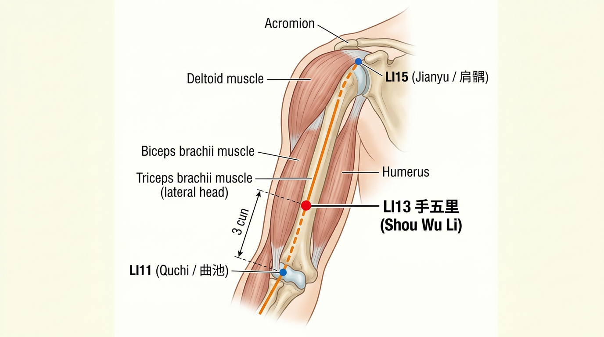
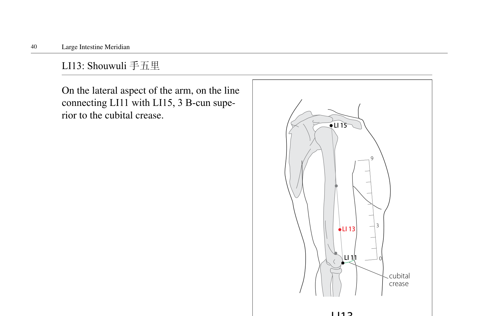
External References: AcuPoints
דיקור
- זווית: ניצבת, 90°
- עומק: 0.5-1.0 צון
- תחושת דה-צ'י: כבדות מקומית
פעולות והתוויות
- פעולות: מווסת צ'י; מפיג נפיחות; מרגיע כאב בזרוע
- התוויות: כאב בזרוע ובמרפק, נפיחות בלוטות לימפה (Scrofula)
- שילובים נפוצים: LI13 + LI15 (כאב זרוע עליונה)
LI14 — בי נאו¶
שם סיני: (Bi Nao) משמעות השם: "זרוע ושריר" — בי = זרוע; נאו = שריר הזרוע העליונה קטגוריה מיוחדת: נקודת מפגש עם ערוץ שלפוחית השתן (BL)
מיקום אנטומי
על הצד הלטרלי של הזרוע העליונה, 7 צון מעל LI11, על שריר ה-Deltoid, במקום החיבור של הדלתואיד.
איך למצוא את הנקודה
- אתרו את LI11 (קפל מרפק) ואת LI15 (כתף)
- מדדו 7 צון מעל LI11, על הקו המחבר ביניהם
- הנקודה נמצאת על קצה ה-Deltoid Insertion, בגבול בין הדלתואיד לביצפס
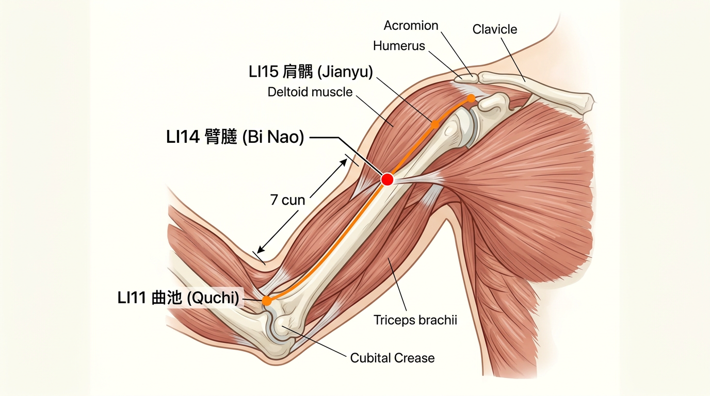
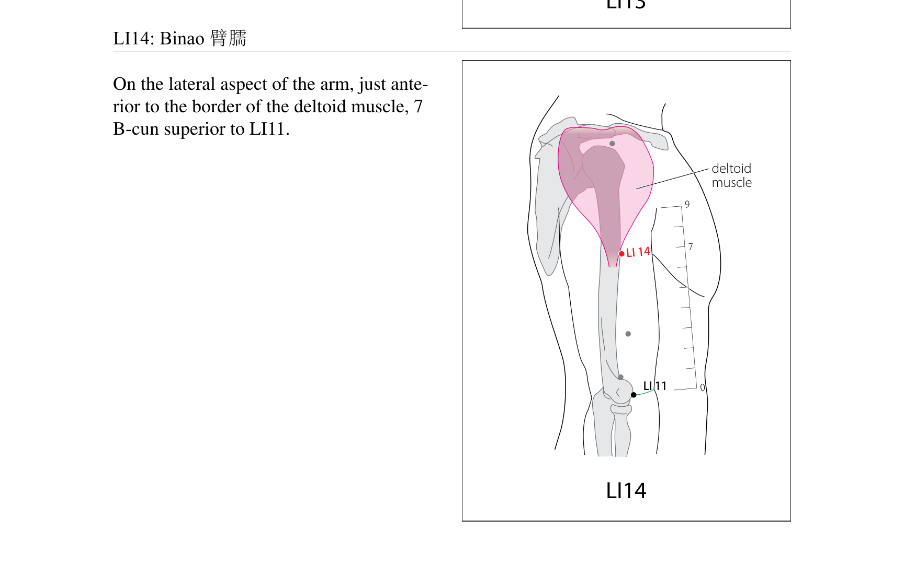
External References: AcuPoints
דיקור
- זווית: ניצבת או אלכסונית, 90-45° כלפי מעלה
- עומק: 0.5-1.5 צון
- תחושת דה-צ'י: כבדות, כאב מקומי
פעולות והתוויות
- פעולות: מועיל לעיניים; מפזר רוח-רטיבות; מפיג נפיחות
- התוויות: כאב בכתף ובזרוע, נוקשות צוואר, בעיות עיניים, נפיחות בלוטות בצוואר
- שילובים נפוצים: LI14 + LI15 + TE14 (כאב כתף)
LI15 — ג'יאן יו¶
שם סיני: (Jian Yu) משמעות השם: "שקע הכתף" — ג'יאן = כתף; יו = שקע/בליטת עצם קטגוריה מיוחדת: נקודת מפגש עם ערוץ יאנג צ'יאו מאי
מיקום אנטומי
בגומה שנוצרת קדמית ותחתית ל-Acromion (בליטת עצם השכם), כאשר הזרוע מורמת (Abducted) ב-90°. בין החלק הקדמי והאמצעי של שריר ה-Deltoid.
איך למצוא את הנקודה
- בקשו מהמטופל להרים את הזרוע ישירות לצד (Abduction) ב-90°
- שתי גומות ייווצרו בכתף — קדמית ואחורית ל-Acromion
- LI15 נמצאת בגומה הקדמית (Anterior Depression)
- כאשר הזרוע מורדת, הנקודה מכוסה על ידי שריר ה-Deltoid
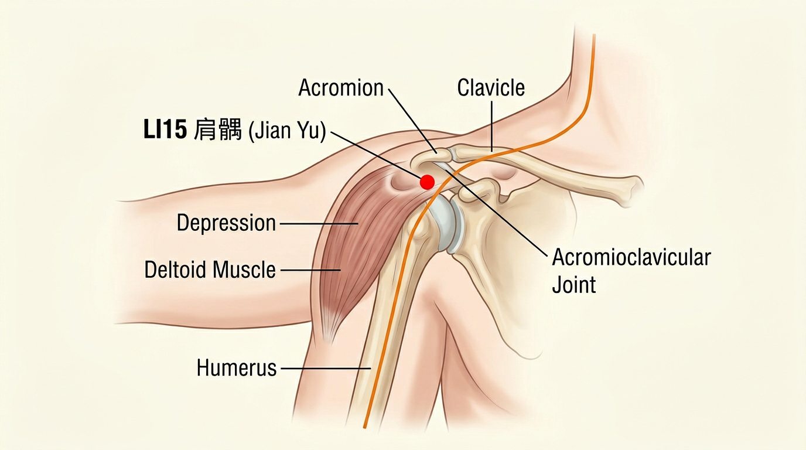
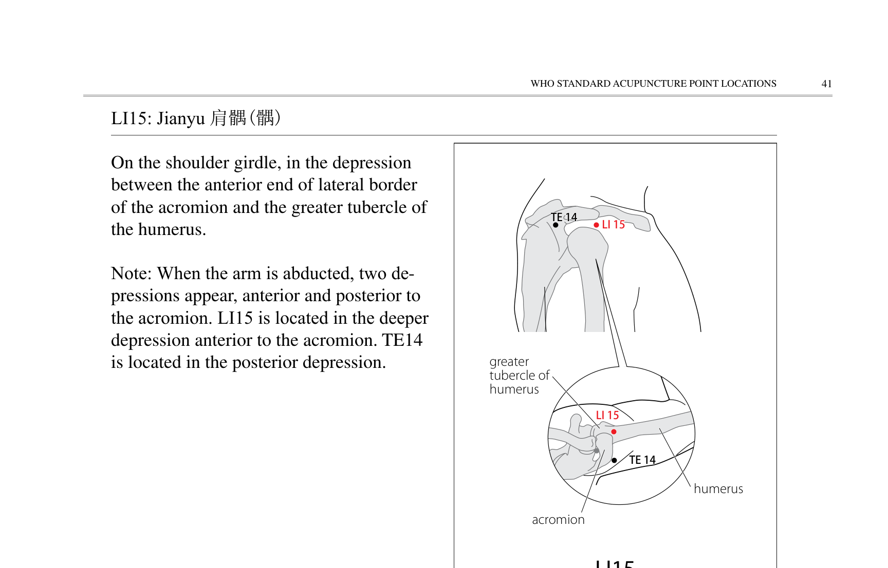
External References: AcuPoints
דיקור
- זווית: ניצבת או אלכסונית כלפי מטה, 90-60°
- עומק: 0.8-1.5 צון
- תחושת דה-צ'י: כבדות עמוקה, תחושה שמתפשטת לזרוע או לכתף
פעולות והתוויות
- פעולות: מפזר רוח-רטיבות; מועיל לכתף ולזרוע; מפזר צ'י תקוע
- התוויות: כאב כתף (נקודה מרכזית), קפיאת כתף (Frozen Shoulder), חוסר יכולת להרים זרוע, שיתוק גפה עליונה, חרפשת (אורטיקריה)
- שילובים נפוצים: LI15 + TE14 + SI9 (כאב כתף — "שלושת הנקודות של הכתף"); LI15 + GB21 (כאב כתף-צוואר); LI15 + LI11 + LI4 (שיתוק גפה עליונה)
LI16 — ג'ו גו¶
שם סיני: (Ju Gu) משמעות השם: "עצם גדולה" — ליד מפגש עצם הבריח עם ה-Acromion
מיקום אנטומי
בגומה שבין ה-Acromial End של עצם הבריח לבין ה-Scapular Spine (עמוד השדרה של עצם השכם).
איך למצוא את הנקודה
- אתרו את קצה ה-Acromion (בליטת הכתף)
- גששו את מפרק ה-Acromioclavicular (AC Joint) — המפגש בין עצם הבריח ל-Acromion
- הנקודה בגומה שאחורית ותחתית למפרק זה
- בקשו מהמטופל להצמיד את היד לכתף הנגדית — הגומה תתגלה
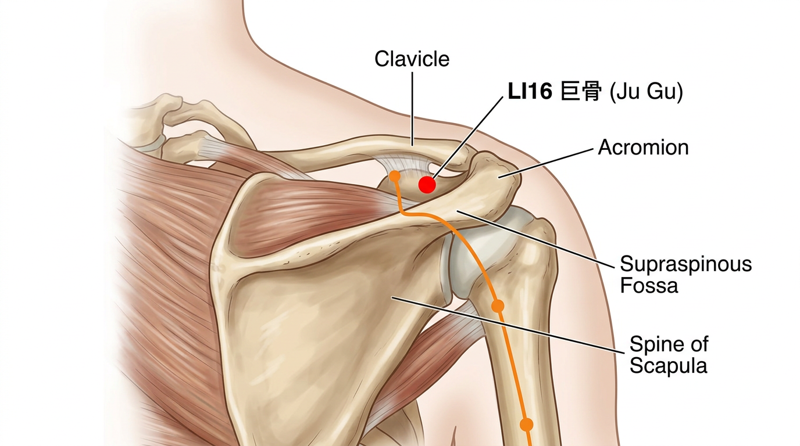
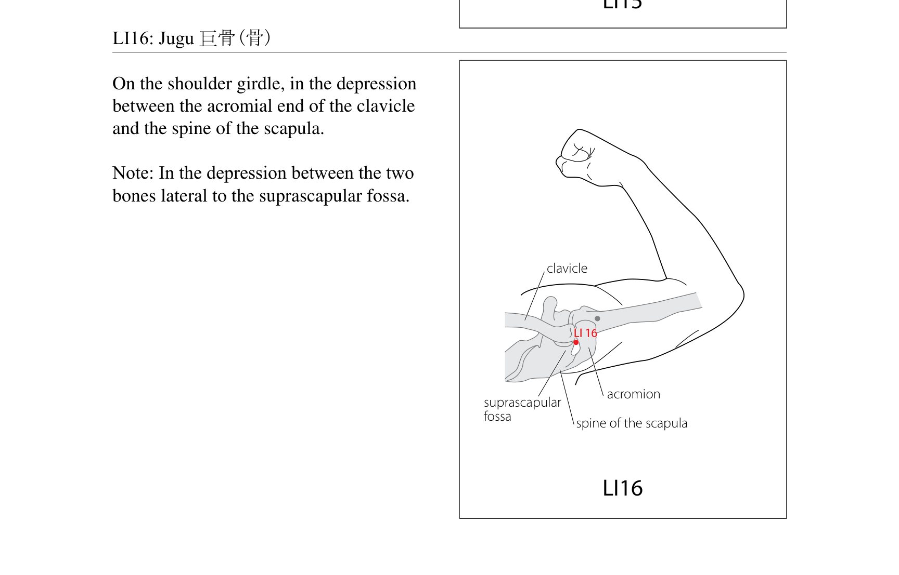
External References: AcuPoints
דיקור
- זווית: ניצבת או אלכסונית כלפי מטה
- עומק: 0.5-1.0 צון
- ⚠️ זהירות: אין לדקור עמוק — סכנת פנאומותורקס
- תחושת דה-צ'י: כבדות מקומית, כאב
פעולות והתוויות
- פעולות: מפזר רוח; מועיל למפרק הכתף; מרפה גידים
- התוויות: כאב כתף, חוסר יכולת להרים זרוע, כאב בגב עליון
- שילובים נפוצים: LI16 + LI15 + SI10 (כאב כתף עליון)
LI17 — טיאן דינג¶
שם סיני: (Tian Ding) משמעות השם: "קדרה שמיימית" — טיאן = שמיים; דינג = קדרה מפורסמת בתרבות הסינית
מיקום אנטומי
על הצוואר, 1 צון מתחת ל-LI18, על הגבול האחורי של שריר ה-Sternocleidomastoid (SCM), ברמת הגבול העליון של סחוס ה-Cricoid.
איך למצוא את הנקודה
- אתרו את ה-SCM (שריר הצוואר הבולט — בקשו מהמטופל לסובב ראש)
- מצאו את תפוח האדם (Adam's Apple) והגבול התחתון שלו (Cricoid Cartilage)
- הנקודה ברמת ה-Cricoid, על הגבול האחורי של ה-SCM
- 1 צון מתחת ל-LI18
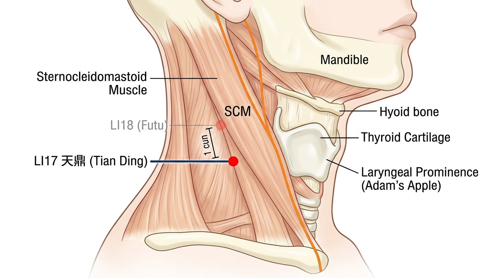
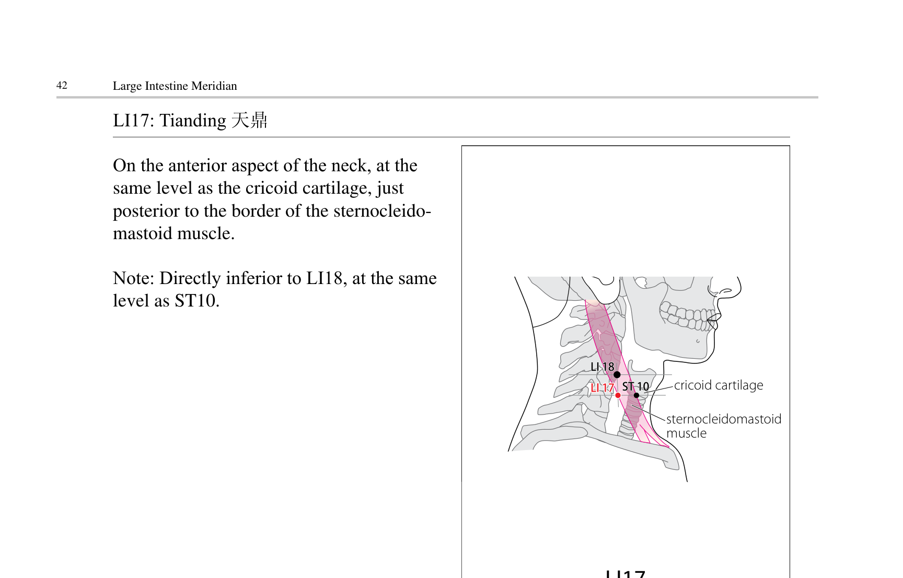
External References: AcuPoints
דיקור
- זווית: ניצבת, 90°
- עומק: 0.3-0.5 צון
- ⚠️ זהירות: הימנעו מעורק הקרוטיד (Carotid Artery) ומוריד הג'וגולרי
- תחושת דה-צ'י: כבדות מקומית
פעולות והתוויות
- פעולות: מועיל לגרון; מפנה חום; מרגיע שיעול
- התוויות: כאב גרון, אובדן קול פתאומי, קושי בבליעה, גויטר (נפיחות בלוטת התריס)
- שילובים נפוצים: LI17 + LI18 + ST9 (בעיות גרון וצוואר)
LI18 — פו טו¶
שם סיני: (Fu Tu) משמעות השם: "תומך בבליטה" — ליד תפוח האדם (הבליטה בגרון)
מיקום אנטומי
על הצוואר, 3 צון לטרלית לתפוח האדם (Adam's Apple), בין ראשי שריר ה-SCM.
איך למצוא את הנקודה
- אתרו את תפוח האדם
- מדדו 3 צון הצידה (לטרלית)
- הנקודה ברמת תפוח האדם, בין הראש הסטרנלי והקלביקולרי של ה-SCM
- 1 צון מעל LI17
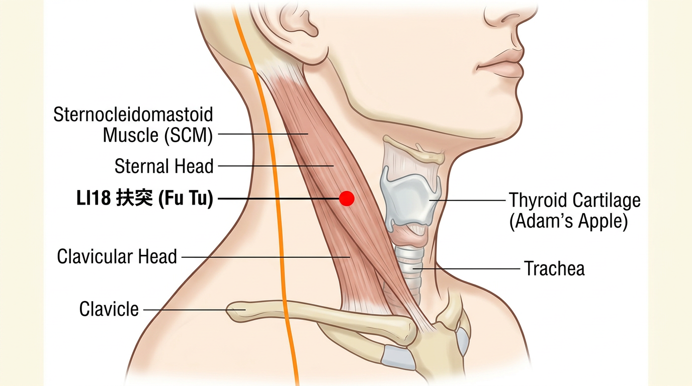
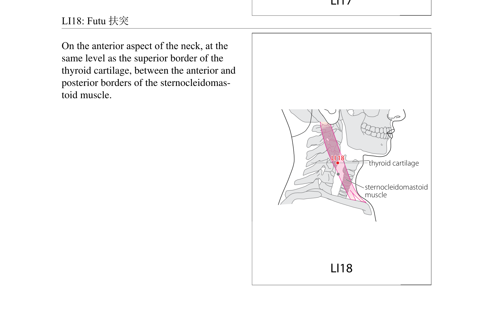
External References: AcuPoints
דיקור
- זווית: ניצבת, 90°
- עומק: 0.3-0.5 צון
- ⚠️ זהירות: הימנעו מעורק הקרוטיד — גששו את הדופק לפני הדיקור
- תחושת דה-צ'י: כבדות מקומית
פעולות והתוויות
- פעולות: מועיל לגרון; מווסת צ'י; מפזר ליחה
- התוויות: שיעול, אסתמה, אובדן קול, כאב גרון, גויטר, קושי בבליעה
- שילובים נפוצים: LI18 + REN22 (אובדן קול); LI18 + ST9 (גויטר)
LI19 — הה ליאו¶
שם סיני: (He Liao) משמעות השם: "שקע התבואה" — הה = תבואה (מתייחס לשפם שנראה כשיבולים); ליאו = שקע
מיקום אנטומי
0.5 צון לטרלית לקו האמצע של השפה העליונה, מתחת לנחיר, ברמת הגבול התחתון של הנחיר.
איך למצוא את הנקודה
- אתרו את DU26 (הפילטרום — המרזב שמתחת לאף)
- מדדו 0.5 צון הצידה מ-DU26
- הנקודה ישירות מתחת לנחיר, ברמת הגבול של השפה העליונה
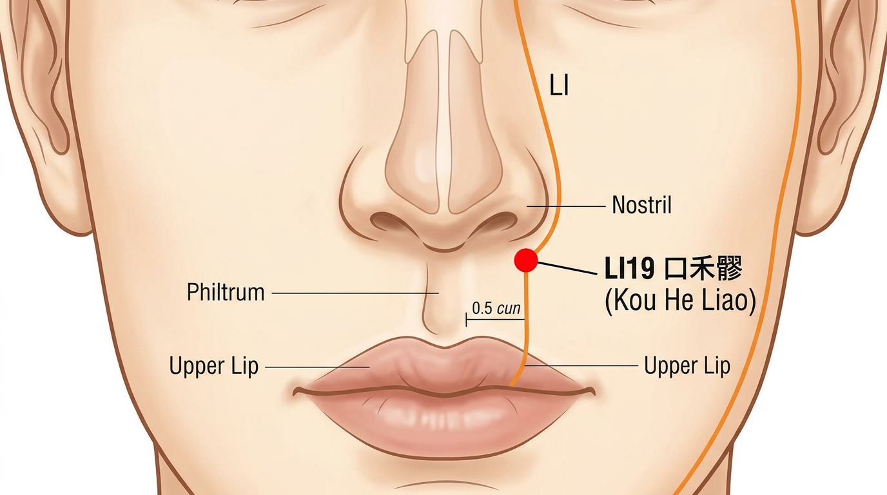
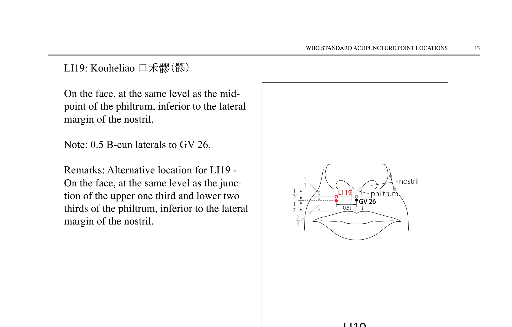
External References: AcuPoints
דיקור
- זווית: אלכסונית או מישורית (Transverse), 15-30°
- עומק: 0.2-0.3 צון
- תחושת דה-צ'י: כאב מקומי, דמעות
פעולות והתוויות
- פעולות: מפתח את האף; מפזר רוח; מרגיע שיעול
- התוויות: חסימת אף, דימום מהאף, סטיית פה (שיתוק פנים), אובדן חוש ריח
- שילובים נפוצים: LI19 + LI20 + DU26 (חסימת אף, שיתוק פנים)
LI20 — יינג שיאנג¶
שם סיני: (Ying Xiang) משמעות השם: "מקבל את הניחוח" — הנקודה ליד האף, ופתיחתה מאפשרת לקבל ריחות קטגוריה מיוחדת: נקודת מפגש עם ערוץ הקיבה (ST); נקודת סיום הערוץ
מיקום אנטומי
בקפל הנזולביאלי (Nasolabial Groove), ברמת נקודת האמצע של הגבול הלטרלי של הנחיר (Ala Nasi), כ-0.5 צון לטרלית לנחיר.
איך למצוא את הנקודה
- אתרו את כנף האף (Ala Nasi) — החלק הרך של הנחיר
- מצאו את נקודת האמצע של הגבול הלטרלי של הנחיר
- הנקודה בקפל שנוצר בין הלחי לאף (Nasolabial Fold)
- לחצו — רגישות ותחושה של "פתיחת האף"
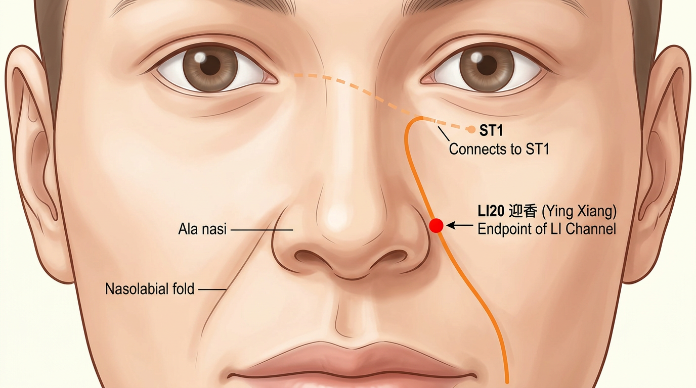
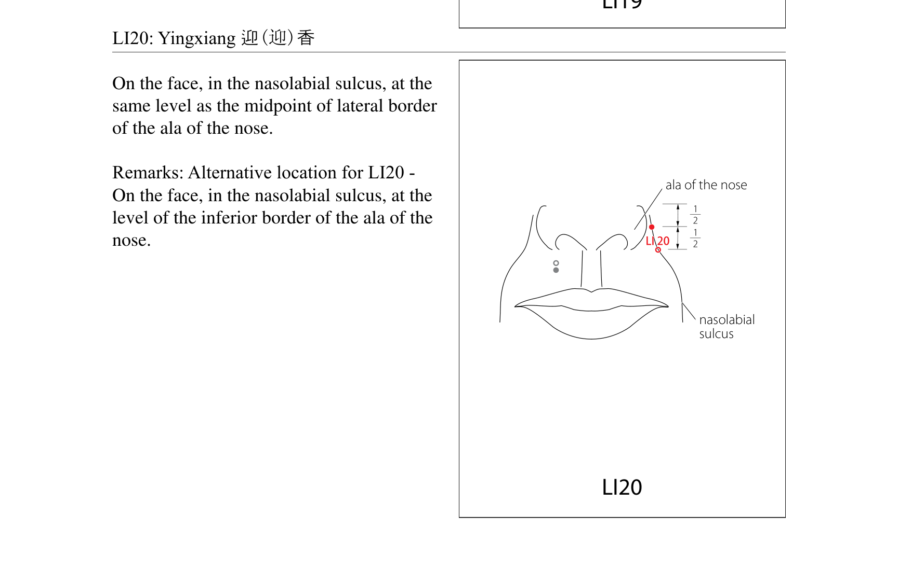
External References: AcuPoints
דיקור
- זווית: אלכסונית כלפי מעלה ומדיאלית, או מישורית (Transverse) לכיוון BL2
- עומק: 0.2-0.3 צון
- תחושת דה-צ'י: תחושת פתיחה באף, דמעות, נימול מקומי
פעולות והתוויות
- פעולות: מפתח את האף (הנקודה המרכזית לאף); מפזר רוח-חום; מפיג נפיחות בפנים
- התוויות: חסימת אף, נזלת, סינוסיטיס, אובדן חוש ריח, דימום מהאף, שיתוק פנים, כאב פנים, גרד באף (אלרגיה)
- שילובים נפוצים: LI20 + LI4 + BL2 (סינוסיטיס, חסימת אף); LI20 + GV23 + BL7 (נזלת אלרגית); LI20 + ST2 (כאב פנים, שיתוק); LI20 + Yintang (חסימת אף — שילוב פשוט ויעיל)
3. סיכום קטגוריות הנקודות¶
| קטגוריה | נקודה | שימוש עיקרי |
|---|---|---|
| ג'ינג-באר (Jing-Well) | LI1 | חירום, חום, אובדן הכרה |
| יינג-מעיין (Ying-Spring) | LI2 | פינוי חום |
| שו-זרם (Shu-Stream) | LI3 | כאבי מפרקים, רטיבות |
| יואן-מקור (Yuan-Source) | LI4 | שיכוך כאב, פנים ופה, הצטננות |
| ג'ינג-נהר (Jing-River) | LI5 | שורש כף יד, חום |
| לואו (Luo-Connecting) | LI6 | חיבור ל-LU, בצקות |
| שי-צלע (Xi-Cleft) | LI7 | כאב חריף, חירום |
| הה-ים (He-Sea) | LI11 | פינוי חום, בעיות עור, מרפק |
4. חמש נקודות שו של ערוץ המעי הגס¶
| סוג | נקודה | אלמנט | כיוון הזרימה |
|---|---|---|---|
| ג'ינג-באר (Jing-Well) | LI1 | מתכת | הצ'י "נובע" |
| יינג-מעיין (Ying-Spring) | LI2 | מים | הצ'י "זורם" |
| שו-זרם (Shu-Stream) | LI3 | עץ | הצ'י "מתחזק" |
| ג'ינג-נהר (Jing-River) | LI5 | אש | הצ'י "גדל" |
| הה-ים (He-Sea) | LI11 | אדמה | הצ'י "מתאסף" |
5. נקודות ה-Lower He-Sea¶
ערוץ המעי הגס הוא ערוץ יד, אך נקודת ה-Lower He-Sea שלו נמצאת ברגל:
- ST37 (Shang Ju Xu) — נקודת ה-Lower He-Sea של המעי הגס
- משמשת לטיפול ישיר בבעיות של איבר המעי הגס (עצירות, שלשול, דלקת מעיים)
6. תרגילים¶
תרגיל 1: מיקום נקודות¶
על זרוע של שותף/ה, אתרו את הנקודות הבאות: א. LI4 (שתי השיטות) ב. LI11 ג. LI10 ד. LI15 (עם הרמת זרוע) ה. LI20
תרגיל 2: בחירת נקודות¶
מטופל מגיע עם הצטננות: נזלת, כאב ראש קדמי, כאב גרון, וחום קל. א. אילו נקודות מערוץ המעי הגס תבחרו? ב. אילו נקודות מערוצים אחרים תוסיפו?
תרגיל 3: פנים-חוץ¶
הסבירו כיצד הקשר פנים-חוץ בין ריאות (LU) למעי גס (LI) בא לידי ביטוי: א. באנטומיה של הערוצים ב. בפתולוגיה (תנו דוגמה קלינית) ג. בטיפול (כיצד נשתמש בנקודות לואו-יואן?)
קריאה מומלצת¶
- Deadman, P. A Manual of Acupuncture — ערוץ המעי הגס
- Maciocia, G. The Foundations of Chinese Medicine — פרק על המעי הגס
- הואנג די ניי ג'ינג, לינג שו, פרקים על ערוץ יאנג מינג
נקודה למחשבה: ערוץ המעי הגס הוא אחד הערוצים הנפוצים ביותר בשימוש קליני, בעיקר בזכות LI4 ו-LI11 — שתי נקודות בעלות ספקטרום פעולה רחב ביותר. LI4 היא כנראה הנקודה הנדקרת ביותר בעולם. הערוץ עובר מהיד דרך הפנים, ולכן הוא חיוני לטיפול בכאבי ראש, שיניים, סינוסים ושיתוק פנים.
ניווט¶
- הקודם: ערוץ הריאות (LU) | הבא: ערוץ הקיבה (ST)
- זוג פנים-חוץ: ערוץ הריאות (LU) — ערוץ הין הזוגי (אלמנט מתכת)
- חזרה למודול: [מודול 2 — מרידיאנים]